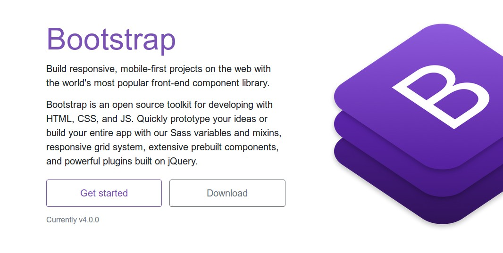
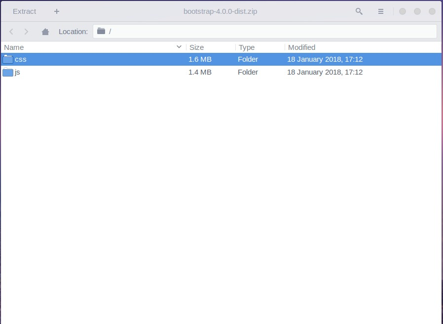
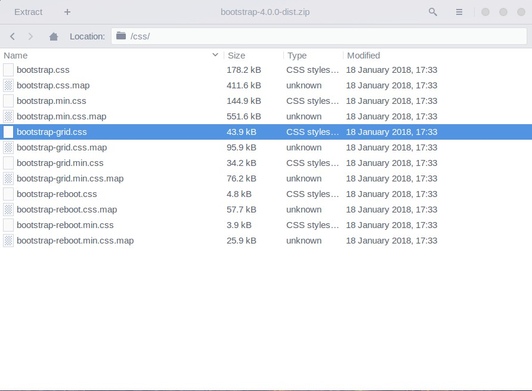

Last modified: Tue Feb 06 2018 23:17:43 GMT+0100 (CET)
La grille css:
1. Quelques examples
Le système Bootstrap
2. Qu’est un framework?
Un framework ensemble de styles prédéfinis que l’on peut réutiliser partout pour construire notre site plus rapidement garder une cohérence graphique.
Pour pouvoir utiliser ce style, une documentation nous fournit des exemples de structures HTML à utiliser pour chaque style.
3. Utiliser la grille de bootstrap
Nous allons utiliser la grille de bootstrap car même si nous n’utilisons que la grille aujourd’huie cela vous permettra d’ajouter des modules au fur et à mesure si vous décidez de continuer a apprendre.
3.1. Téléchargement
Commencez par télécharger la grille en vous rendant sur le site de bootstrap

3.2. Extraction
Ensuite dezippez le dossier téléchargé et allez regarder dans le dossier css.

3.3. Installation
Extrayez le fichier bootstrap-grid.css et allez le mettre dans le dossier de votre site.

Ensuite faites un lien dans la partie <head> de votre page html vers cette nouvelle feuille de styles.
<!DOCTYPE html>
<html>
<head>
<meta charset="utf-8">
<meta name="viewport" content="width=device-width">
<title>Mon site</title>
<link rel="stylesheet" href="bootstrap-grid.css">
<link rel="stylesheet" href="styles.css">
</head>
<body>
<div class="container">
<div class="row">
<div class="col-6">hello</div>
<div class="col-6">hello</div>
</div>
</div>
</body>
</html>
4. Exemple de modèle de mise en page
Il est toujours possible de faire son layout soi-même, sans utiliser de grille. Voici un exemple.
https://www.quackit.com/html/templates/layout_templates.cfm
See the Pen 3 column layout by Rorsvort (@borisrorsvort) on CodePen.